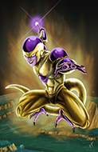

Selecione um personagem
-

- 

Goku
Força, velocidade, durabilidade, sentidos sobre-humanos, resistência sobre-humanas, absorção de energia, resistência ao calor, tele cinese, cura, regeneração, absorção de energia, kaioken, teletransporte e telepatia